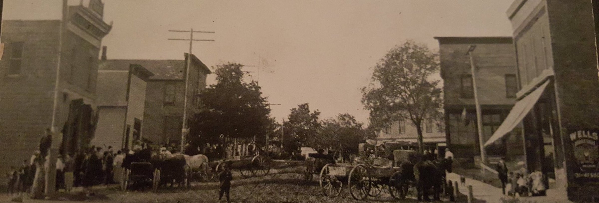
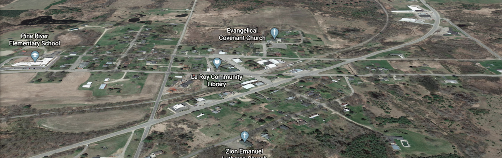

history
Established in 1973, the Area Historical Society has been preserving the history of the village. The current museum was donated to the historical society in 1986 by area residents. They donated the 1901 building that was the former Exchange Bank on Bevins Street.
fundraisers
The Area Historical Society uses fundraisers to aid in covering the costs for collecting and cataloging items deemed to be of historical significance to the area. Cemetery and family genealogies are also cataloged with this financial help.
hours
At this time you can visit the museum by appointment.
Visits can be scheduled through members of the Area Historical Society. We encourage visitors to the area and groups, such as schools, to contact us for a special view our collection.
